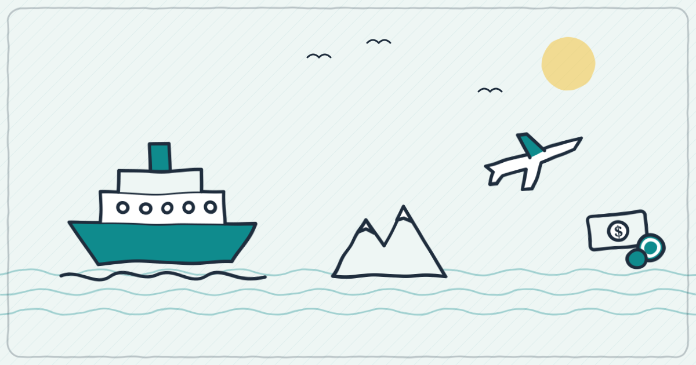

What a Norwegian Fjords Cruise Costs From Canada
A couple from Canada should plan on roughly C$6,500–11,000 all-in for a 7-night Norwegian fjords cruise in an inside cabin, or C$8,000–13,500 with a balcony, at recent prices. The fare is only part of it: transatlantic flights, a night in London or Amsterdam and Norway's shore prices add as much again.

A couple flying from Canada should budget roughly C$6,500–11,000 all-in for a 7-night Norwegian fjords cruise in an inside cabin, and about C$8,000–13,500 with a balcony, at recent prices. The cruise fare is close to what a Mediterranean week costs. What pushes the total up is everything around it: a transatlantic flight, a hotel night in an expensive European city, and shore prices that make Juneau look cheap.
How much does a Norwegian fjords cruise cost from Canada all-in?
The full picture for two people on a 7-night sailing from a northern European port, flying from Toronto. Cruise fares are in US dollars because most lines charge that way; Canadian figures are rough conversions.
| Cost item, per couple | Inside cabin | Balcony cabin |
|---|---|---|
| Fare for two | US$1,500–2,400 (C$2,100–3,400) | US$2,600–4,400 (C$3,600–6,200) |
| Taxes, fees and port charges | US$300–500 (C$420–700) | US$300–500 (C$420–700) |
| Daily gratuities, 7 nights | US$230–300 (C$320–420) | US$230–300 (C$320–420) |
| Return flights to London or Amsterdam | C$1,800–3,400 | C$1,800–3,400 |
| Hotel night before, near the port | C$250–450 | C$250–450 |
| Transfers to and from the ship | C$80–250 | C$80–250 |
| Excursions, one or two each | C$500–1,200 | C$500–1,200 |
| Drinks and extras on board | C$300–700 | C$300–700 |
| Travel medical insurance for two | C$150–450 | C$150–450 |
| Total | about C$6,500–11,000 | about C$8,000–13,500 |
The month decides where you land in those ranges. The season runs from about May to September; May and September sit at the bottom for fares and flights alike, while June and July bring the longest evenings and peak prices. A May sailing on a seat sale with one hotel night can land near C$6,500. A July balcony with two nights in central London and a few paid tours reaches C$13,000.
Where do fjords cruises leave from, and which port is cheapest to reach from Canada?
Almost no fjords cruise starts in Norway itself, apart from the coastal voyages out of Bergen. Mainstream ships sail from Britain, the Netherlands, Denmark and Germany, so your flight is really a flight to one of those.
Southampton via London
London has nonstop flights from more Canadian cities than any other European airport. Southampton is 90 minutes to two hours from Heathrow by coach, train or car, so most people sleep in London or near the port the night before. Many sailings here are on British-market ships that price in pounds; the note on paying for a cruise in CAD or USD explains how the card choice works.
Amsterdam and Rotterdam
KLM flies nonstop to Amsterdam from Toronto, Montreal, Calgary, Edmonton and Vancouver, which makes Dutch departures easy. Bigger ships use the terminal at IJmuiden or sail from Rotterdam, each an hour or so from the airport, so check which pier is yours before booking a hotel.
Copenhagen, Hamburg and Kiel
Usually one connection from Canada. Kiel is about 90 minutes from Hamburg airport, so allow for a transfer or a hotel in Kiel itself.
Bergen and the coastal route
The coastal voyages between Bergen and Kirkenes are a different product: small ships, dozens of working-port stops, higher fares per night. Bergen has no nonstop flights from Canada, so budget a connection through Oslo, Amsterdam or London.
Is a Norway cruise more expensive than Alaska for Canadians?
For most Canadians, yes, and the gap depends on where you live. Alaska from Vancouver is a short hop for anyone in the West; Norway is long-haul for everyone, as is a Mediterranean cruise from Canada, which shares the flight cost but has cheaper ports. A Toronto or Montreal couple already faces a five-hour flight to Vancouver, so for them the gap is smaller than they expect.
| Per couple, 7 nights, inside cabin | Norwegian fjords | Alaska from Vancouver |
|---|---|---|
| Rough all-in from Calgary | C$6,500–11,000 | C$4,500–8,000 |
| Rough all-in from Toronto | C$6,500–11,000 | C$5,000–8,500 |
| Flight time each way | 7–10 hours plus any connection | 1.5 hours from Calgary, 5 from Toronto |
| Time change | 8 hours ahead of Alberta, 6 ahead of Ontario | Pacific time |
| Shore spending | Very high, in kroner | High, in US dollars |
The full Alaska numbers are in the note on what a couple really pays for Alaska from Vancouver. One cost Alaska never has is jet lag: a six- or eight-hour change eats the first day of a European trip, and the note on ship's time and time zones explains why the clock keeps moving aboard.
Why is Norway so expensive once you step off the ship?
Norway uses the krone, not the euro, and a high-wage, high-tax economy means a beer, a sandwich or a taxi costs well above Canadian prices. At recent rates a Canadian dollar bought roughly 7 kroner, so a NOK 120 beer is about C$17 and a café lunch for two can pass C$60. Cards work everywhere, so there is no need to carry cash.
The fjords reward walkers, and much of what people remember is free:
- Bryggen, the old wharf in Bergen, then the path up Mount Fløyen instead of the funicular
- The waterfall trail out of Geiranger village, with the ship shrinking below you
- The steps to the Aksla viewpoint over Ålesund's Art Nouveau rooftops
- The white wooden lanes of old Stavanger, two minutes from the pier
What do excursions cost in the fjords, and which are worth paying for?
Ship-sold tours in Norway run about US$100–250 per person at recent prices. Three tend to justify the money:
- The Flåm Railway, one of the steepest standard-gauge lines anywhere, climbing from the fjord to the plateau at Myrdal. On a short port call the ship's version protects you if the train runs late.
- A glacier arm from Olden or Nordfjordeid. Briksdal is a coach ride and a short walk; the ice has retreated, so expect it in the distance rather than at your feet.
- Kayaking in Geirangerfjord or Nærøyfjord. Sitting at water level under the cliffs is the one view the ship cannot give you.
Pulpit Rock (Preikestolen) from Stavanger is a tougher call: a four-hour round-trip hike before the transfers. Fit walkers love it; everyone else should take the fjord cruise or the city walk.
Will the new fjord emission rules change your itinerary?
Norway has brought in zero-emission requirements for passenger ships in its World Heritage fjords, which include Geirangerfjord, Nærøyfjord and Aurlandsfjord. From January 2026 the rule applies to ships under 10,000 gross tons; larger ships have until 1 January 2032. So the big mainstream ships can still sail into Geiranger and Flåm for the next few seasons, while small coastal and expedition vessels switch first. Some lines have moved calls to nearby ports such as Hellesylt or Eidfjord, so read the itinerary rather than assuming "Norwegian fjords" means Geiranger.
Norway has also passed a law letting municipalities charge visitor levies, and Oslo wants a per-passenger cruise charge from 2027. Small on the scale of a C$10,000 trip, but it may appear in your taxes and fees.
Want this checked for your own sailing? A licensed cruise consultant can price it up and answer questions for free, with no obligation.
Ask a cruise expert →How to price your fjords trip before you book
Get one number, not three: a quote that includes the cruise, flights from your own airport, the hotel night and transfers, set beside the same all-in total for an Alaska week. Add travel medical insurance, since provincial plans pay almost nothing abroad and a Norwegian hospital bill is priced like everything else there; the note on cruise travel insurance for Canadians covers what to look for. If the fjords still win, book the shoulder months and plan to walk in every port.
Questions people also ask
How much is a 7-night Norwegian fjords cruise per person?
At recent prices the fare alone runs about US$750–1,200 per person for an inside cabin and US$1,300–2,200 for a balcony on a 7-night sailing from Southampton, Amsterdam or Copenhagen. Taxes, gratuities, flights, a hotel night and excursions roughly double that for a Canadian traveller.
Which port is easiest for Canadians to reach for a Norway cruise?
Southampton, via London, has the most nonstop flights from Canadian cities, and Amsterdam is close behind with KLM nonstops from Toronto, Montreal, Calgary, Edmonton and Vancouver. Copenhagen, Hamburg and Kiel usually mean a connection. Bergen itself is the start of the Norwegian coastal voyages.
Is Norway expensive for cruise passengers once ashore?
Yes. Norway is one of the priciest places you can step off a ship: a beer or a simple lunch costs noticeably more than in Alaska or the Mediterranean. The saving grace is that the best of the fjords, the walks and viewpoints, costs nothing but shoe leather.